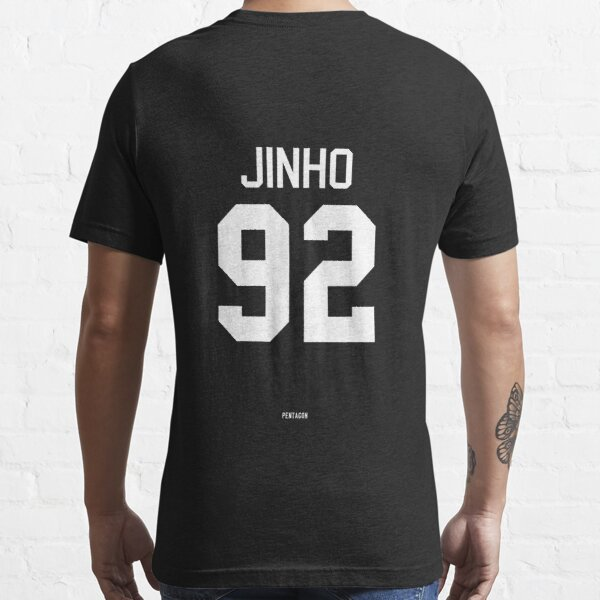

info
biografie
Sinds het voorjaar van 2020 heeft de Vlaamse zanger, producer en engineer Jinho 9 (23) in de muziekindustrie voet aan de grond gekregen. Jinho 9 groeide samen met zijn zus en broertje op in Ninove, een dorp in België vlakbij Brussel. Hij leerde zichzelf niet alleen produceren, maar ook opnemen, mixen én masteren.
Gallerij
Merch
Tour
Tour dates
| Date | City | Hour |
|---|---|---|
| 10 November 2022 | Antwerpen | 20:00-23:30 |
| 12 November 2022 | Mechelen | 19:00-22:15 |
| 15 November 2022 | Brussel | 22:00-00:30 |